chapter3 - section4
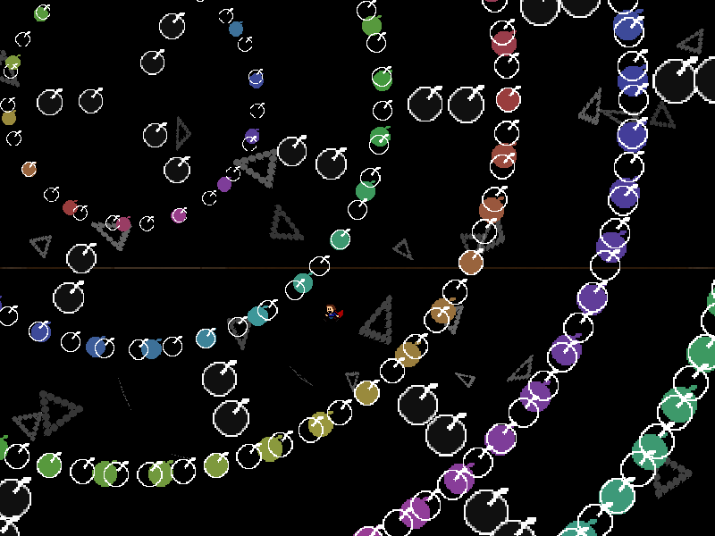
| creator | segment | label | jump |
|---|---|---|---|
| yuzuyu(main) NN(supervise) |
0:36.60~0:41.20 | P*A*S | infinite |
3-1の解答に対応する、択一型の弾幕です。
3-1における星型弾幕の回転方向を記憶し、3-4における放射状弾幕の回転方向を判断することを目的としています。
具体的には、3-1の0:27.38、0:28.18、0:28.98,、0:29.78における星型弾幕の回転方向（fig.3-4.1.a~fig.3-4.1.d）が、それぞれ3-4の0:38.14、0:38.44、0:38.74、0:39.04において回転する放射状弾幕の回転方向（fig.3-4.2.a~fig.3-4.2.d）を示しています。
特に、同心円状弾幕で分割された空間における2層目と3層目の間の領域（fig.3-4.2.a~fig.3-4.2.dでプレイヤーが滞在している部分）に存在する放射状弾幕の4回分の回転に関して、その回転方向が星型弾幕の回転方向と一致しており、また回転量については回転開始時のプレイヤーの位置を基準として決定されます（回転終了時に回転開始時点のプレイヤーの位置と重なる）。
したがって、先述の領域に入った上で、3-1における星型弾幕の回転方向と同一方向にタイミングよく動くことで回避することができます。
また、4回分の回転方向に関して、+方向（反時計回り）と-方向（時計回り）がそれぞれ2回ずつ選択されます。
考えられる順番が（±,±,∓,∓）（±,∓,∓,±）（±,∓,±,∓）の計6通りであることから、それらの出方（AABB, ABBA, ABAB）といずれかの回転方向さえ判明すれば4回分の回転方向を復元可能であるということを利用することで攻略がしやすくなるかもしれません。
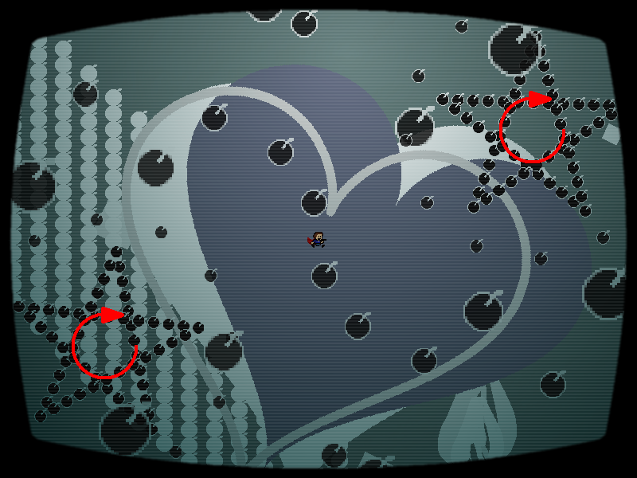
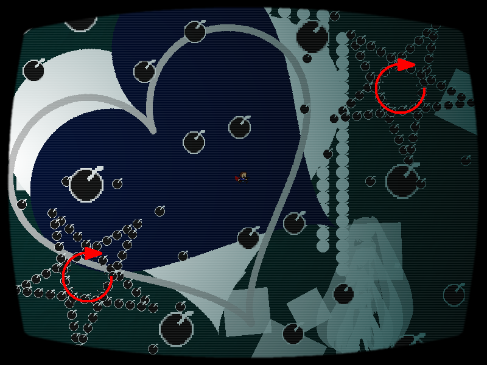
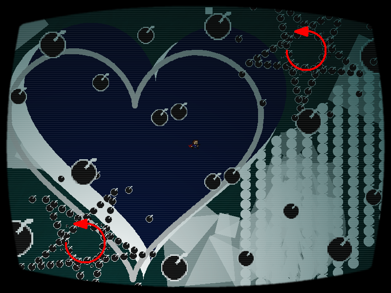
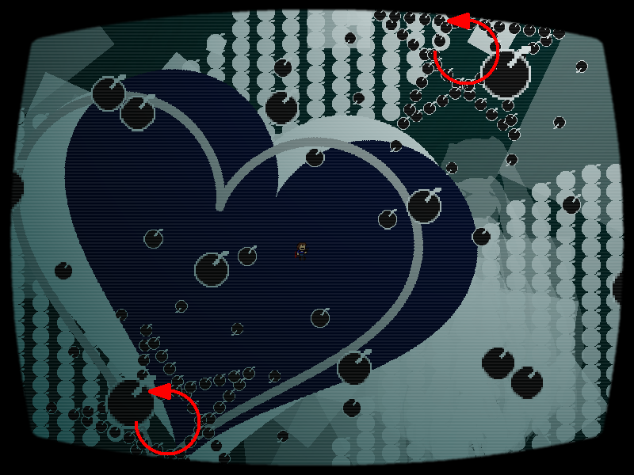
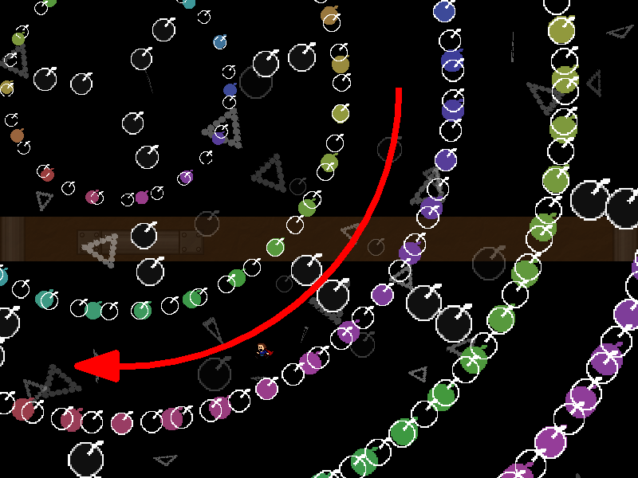
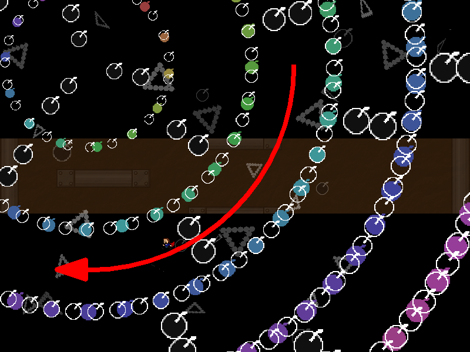
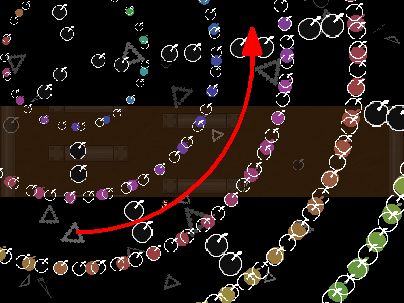
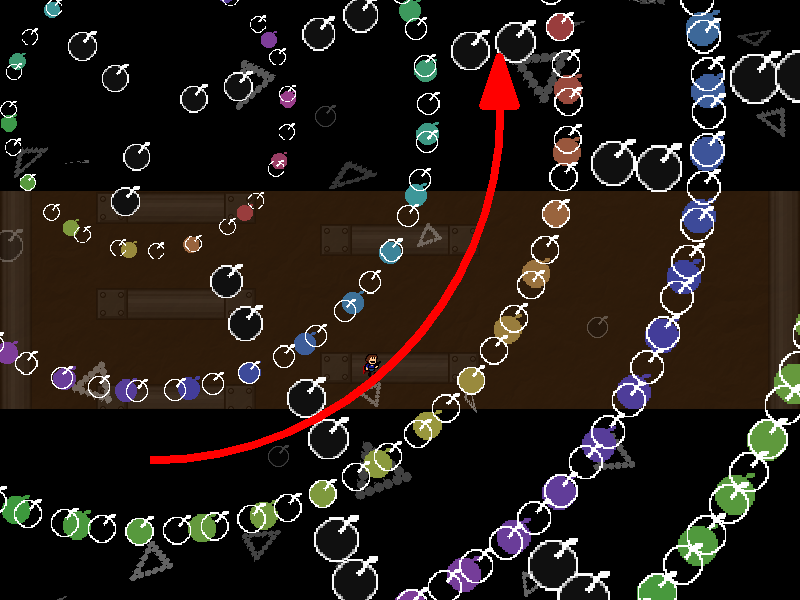
なお、弾幕の出現位置についてはfig.3-4.3.a~fig.3-4.3.dに示す4通りのみが存在します。
いずれのパターンにも対応可能にするために、3-4開始時点で画面中央にある程度近づいている必要があります。

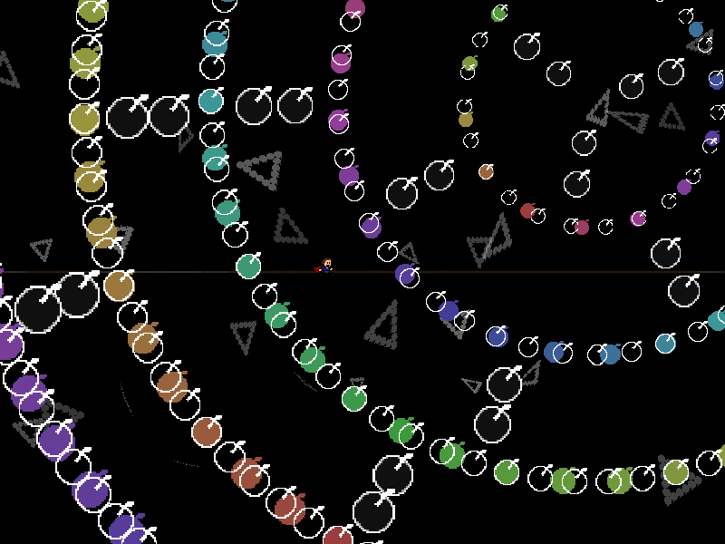
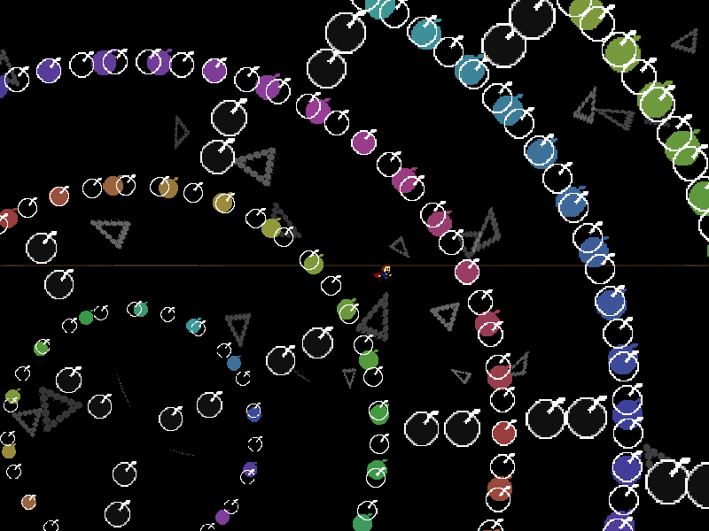
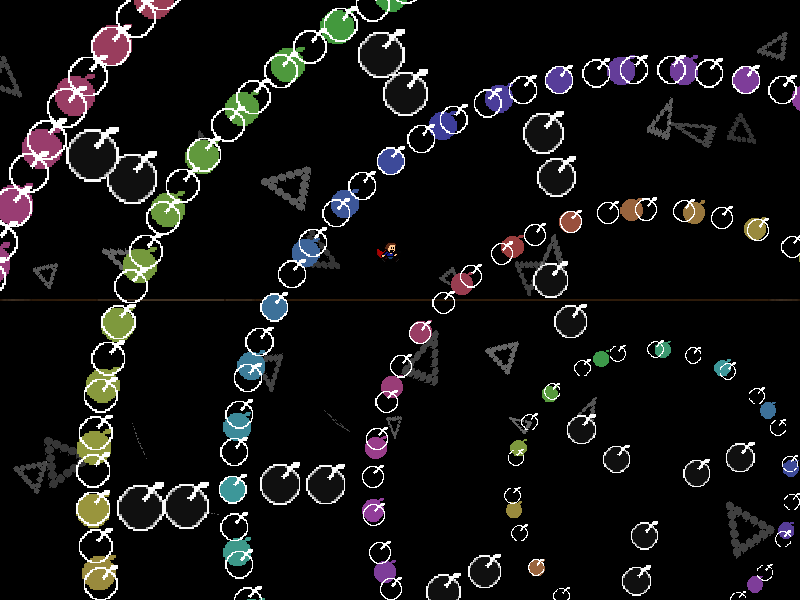